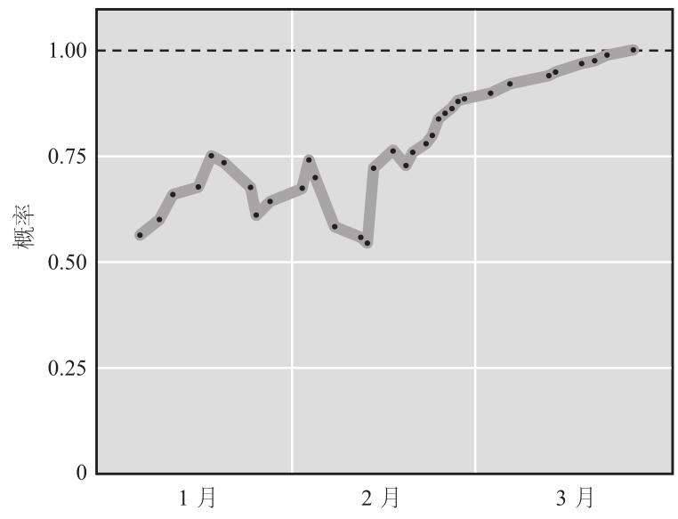

情报高级研究计划局的比赛办到第三届时，蒂姆•明托（Tim Minto）力压群雄夺得冠军，最终的布莱尔得分为0.15。这是一个令人吃惊的成绩，几乎可以与肯•詹宁斯连续74次在《危险边缘》节目中获胜媲美。这位45岁的温哥华软件工程师取得如此佳绩的一个重要原因是他具备更新预测的技能。
蒂姆做初始预测的时间比其他顶级预测家少。“我一般用5~15分钟做一个预测，也就是说，也许1个小时左右就完成了6或7个问题的预测。”他说。而第二天，他又会回顾前一天的问题，发表新的见解。他还在互联网上查阅相反的证据。每一星期他用5天时间做这件事。
这些调研工作使他的观点发生很大变化。“我不断更新预测，”他说，“这就是我的思维方法，但是我通常更多地用在实际工作中，而不是用在回答（比赛）问题上。”15 当一个问题结束预测时，蒂姆通常会交出12条预测。有时，甚至接近40或50条。有一个题目问的是美国和阿富汗是否会就美军继续驻扎阿富汗达成协议，他提交了77条预测。
看起来明托队长似乎反应过度，直接驾船驶向卡律布狄斯一侧了。不过，我该谈谈他的持续修正过程中的单次调整幅度。几乎每一个案例中，幅度都不大，可是却会产生很大影响。
叙利亚内战爆发，大量平民撤离该国。情报高级研究计划局的比赛要求预测者回答“联合国难民署2014年4月1日报告的在册叙利亚难民人数”是否少于260万。这个问题是2014年1月第一星期提出的，因此预测者必须研究未来3个月的形势。事后证明答案是肯定的。图7–1显示了蒂姆•明托在这3个月中如何更新观点。

问题提出后，蒂姆进行了第一次预测，略高于50%，偏向“是”一边，这在当时是合理的。目标数字的确很大，但是叙利亚局势不稳，难民数量每天持续上升。图7–1“说”出了随后发生的事：蒂姆修改了34次预测。虽然某些更新后的预测让他偏离了正确答案，但整体趋势基本上保持正确方向。蒂姆最后的布莱尔得分是0.07，令人印象深刻。
请注意蒂姆的变动幅度有多么小：完全没有30或40个百分点的剧烈振荡；平均变动非常小，只有3.5%。这至关重要。少数几次小幅调整会使蒂姆看起来反应不足，而多次大幅调整又会让他显得反应过度。但如果采用多次小幅调整，蒂姆就可以在斯库拉和卡律布狄斯之间安全航行了。
我们可以将这样细小的变动称为“怀疑单元”，用它作为思维工具，也许看起来有些奇怪。不过，如果你的思维能达到蒂姆的细分程度，自然也会那样做。假设2014年9月初你看到这样的信息：出类拔萃的民意测验数据采集人纳特•西尔弗认为共和党赢得参议院中期选举的机会是60%。你发现这个预测非常有说服力，于是，你将自己的初始预测也设为60%。第二天，你了解到新的民意测验显示共和党在科罗拉多州参议院的支持率从45%上升至55%。这条新闻会让你提高预测值吗？如果是的，提高幅度又是多少？一定大于零。可是，接下来你又会想，共和党需要赢得多少个州的选举才能使局势有利于己方。然后，你意识到，科罗拉多州的一场胜利不会产生多大的影响。于是，你认为最大变动值应该是10%。现在，实际变动值位于1%~10%之间。共和党有望赢得多少个州的选票？如果答案是“数量很大，足以获得参议院多数党地位”，那就可以提高变动区间上限值。如果答案是“恐怕难以赢得多数席位”，那就降低下限值。在各州的竞选活动中，民意趋势如何？在科罗拉多州发挥作用的因素适用于其他州吗？选举还有多久才开始？在选举开始前的这段时间内，民意测验的可预测性如何？每一个问题的答案都能帮助你朝着合理的修正值迈进一小步。先是2%~9%，然后调整为3%~7%。最后，你确定变动值为4%。这样，你的预测概率从60%提高至64%。
调整幅度不大，比较平滑。甚至可以坦率地说，有点儿枯燥无味。蒂姆永远不会成为权威，通过电视节目、畅销书和企业论坛与观众分享他的远见卓识。可是蒂姆的方法卓有成效。比赛数据证明了这一点：超级预测家不仅更新频率高于其他预测者，而且他们的调整幅度也更小。
这种方法为什么有效？原因并不神秘。不会根据新信息调整预测观点的预测者将无法抓住新信息的价值，而对新信息如此敏感以至于完全根据新信息来做预测的预测者将失去旧信息的价值，而这些旧信息正是之前预测的基础。小心翼翼地在新旧信息之间寻找平衡的预测者能够抓住二者的价值，将其注入新预测中。要做到这一点，最好的方法是迈小步、勤更新。
有一个老的思维实验诠释了这个观点。假设你背对着一张台球桌坐下。你的朋友在桌子上滚动台球，它随机地停在某个地方。你想盲猜它的位置。用什么方法呢？你的朋友滚动第二个球，它停在另一个随机位置。你问朋友，“第二个球在第一个的左边还是右边？”朋友回答：“左边。”这只是微不足道的信息片段，但并非毫无价值。你从中得知，第一个球不是停在球桌最左边，而且，它在球桌右半部分的可能性还略高一点儿。假如朋友再次滚动一个球，然后你们重复一遍刚才的问答，你就获得了新的信息片段。如果朋友回答“还是在左边”，那么第一个球在桌子右半部分的可能性又增加了一分。不断重复这个过程，第一个球可能的位置范围慢慢收窄，正确答案渐行渐近。当然，你绝对无法彻底消除不确定因素。16
如果你学过《101统计学》（Statistics101）这门课程，也许
还记得托马斯•贝叶斯设计了这个思维实验的一个版本。贝叶斯是一位长老会牧师，学习过逻辑学。他出生于1701年，正是现代概率理论诞生的前夕。他为这门学科贡献了一篇文章，题为“机会问题的解法”。这篇文章，连同贝叶斯的朋友理查德•普莱斯（此人于1761年贝叶斯过世后发表了他的文章）的著作，以及伟大的法国数学家皮埃尔•西蒙•拉普拉斯的真知灼见，最终促成了贝叶斯定理的诞生。这个定理“长”成这样：
简单地说，该定理认为，你的新判断将有赖于两个因素：先验判断（连同所有形成这一判断所需的知识）乘以新信息的“判别值”。这非常抽象，让人摸不着头脑。现在，我们来看看我的同事、政治学家、超级预测家杰伊•乌尔费尔德（Jay Ulfelder）如何将其用于实际。
2013年，奥巴马政府任命查克•哈格尔为国防部长。可是，随着一些有争议的报告浮出水面，而后一场听证会又不欢而散，有人猜测哈格尔的提名会被参议院否决。“哈格尔会退缩吗？”国防分析师汤姆•里克斯（Tom Ricks）写道，“我想说，提名获得通过的概率是50%……但是会随时间下降。底线是：我认为，如果某一个工作日，参议院军事委员会没有投票决定是否向全体参议员递交提名，那么，每过一个这样的工作日，哈格尔成为国防部长的可能性就会下降约2%。”这是一个合理的判断吗？“有经验的预测者通常从基本概率开始，”乌尔费尔德写道，“自‘二战’结束后不久设立这个（国防部长）职位以来，24次官方提名中似乎只有1次被参议院否决，而且，没有任何一位被提名者退缩。”因此，基本概率是96%。假设在查克•哈格尔被提名国防部长后，乌尔费尔德要立即回答提名是否能获得批准，如果他没有考虑任何其他信息，他会说，“成功的机会是96%”。因为这个估计值是在搜集到更多信息之前得出的，所以被称为“先验”。17
但是，当时哈格尔把听证会搞砸了。显然，这减小了他的机会。减小幅度有多大呢？为了回答这个问题，乌尔费尔德写道：“贝叶斯定理要求我们评估两个因素：（1）如果提名注定被否决，我们看到哈格尔在参议院表现不佳的可能性有多大；（2）如果提名注定获得通过，看到表现不佳的可能性又有多大。”乌尔费尔德没有这些数字，因此，他一开始就选择无理由地信任里克斯，使自己的预测结果严重倾向于里克斯的观点。他的逻辑是，如果里克斯的那些数字无法证明合理，那么他的观点同样如此。“为了论证的需要，我会假设，每5位注定当选的提名者中只有1位在任命听证会上表现糟糕，而在注定失败的提名者中，这个比例为19/20。”乌尔费尔德将里克斯的数字放进贝叶斯的公式中，经过计算，他的预测结果“从96%骤降至较低的……83%”。于是，乌尔费尔德断言里克斯的预测不靠谱，哈格尔仍然很有可能当选。两星期后，哈格尔的确成为国防部长。18
这也许会令厌恶数学的人感到绝望。预测师真的必须理解、记住和使用令人颤抖的代数式吗？我有一个好消息带给你们：不，你不必那么做。
超级预测家是一个数学基础好的群体。许多人知道贝叶斯定理，如果感觉有必要，他们会运用这个定理来为自己服务。可是，他们很少如此直接地计算数字。对超级预测家而言，比贝叶斯定理重要得多的是贝叶斯的这一核心见解：根据证据的重要性持续更新预测，以此逐渐接近真相。19 蒂姆•明托就是这样。他知道贝叶斯定理，但在数百次更新预测的过程中，他从未运用过该定理。明托也赞赏贝叶斯的精神。“让我凭记忆写出贝叶斯定理，我可能写不出来，”他说，“尽管如此，我还是认为我可能比大多数人更擅长直观地理解贝叶斯定理。”明托是一位不用贝叶斯定理的贝叶斯主义者。这个自相矛盾的描述适用于大部分超级预测家。
现在我们掌握了胜利公式：大量的小幅更新。依此行事，你很快就会在预测比赛中取得佳绩，对吗？
我倒是希望这么简单。的确，蒂姆•明托的方法经常表现不凡，所以，在超级预测家更新预测的过程中，这种方法屡见不鲜。不过，它不是能打开所有锁的万能钥匙。有时使用这种方法恰恰适得其反。
还记得道格•洛奇对那份北冰洋冰海面积报告的过度反应吗？他将预测概率提高为95%，几天后，他分析了最新的和过去12年的数据，将这些数据与科学家的预测进行比较，发现预测与实际情况存在巨大且不断加大的差距。他应该怎么应对？道格可以遵循“大量的小幅更新”指导原则，随着时间推移逐步降低预测值。他也可以推倒重来。“我将概率定为95%的唯一理由是一份显然不合格的报告，因此，我应该摆脱这份报告的影响，重新做预测。”他选择了第二条路。首先，他将概率回调至55%，这是他的初始预测，接着降低至15%。在那之后，道格恢复了“大量的小幅更新”，这是他一贯的风格。
正确的选择。如果道格在概率为95%时坚持“大量的小幅更新”，他那令人失望的最终得分还要糟糕得多。
乔治•奥威尔在其著名文章《政治和英语》的结尾重点强调了6条规则，包括“能用简短单词的地方绝不用长单词”，“能用主动语态的地方绝不用被动语态”。但是，第六条规则才是关键：“宁可违反上述规则，也不要言之无物。”
我理解有人渴望找到防止错误的规则来保证结果不出问题，这是刺猬型评论员及其错误的确定性对我们的致命吸引力的根源。这里没有什么魔法公式，只有明白无误的规则和诸多告诫。超级预测家知道这些规则，但也明白，运用它们需要细致入微的判断。他们宁愿违反这些规则，也不想交出一份简单粗糙的预测。